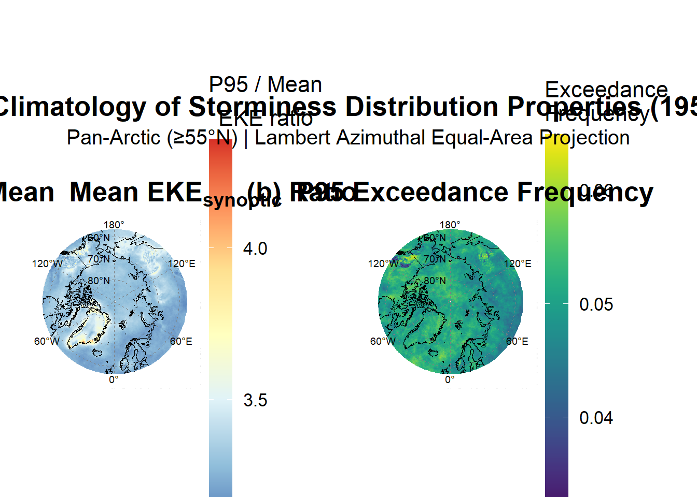

if (!all_ok) {warning(paste("\nOne or more required files are missing.","Run the Python pipeline (Steps 1-3) and Phase 1 before proceeding.",sep ="\n" ))} else {cat("\n\u2713 All input files present. Environment ready.\n")}
3.2 Seasonal decomposition (all metrics by DJF/MAM/JJA/SON)
3.3 Autumn intensification hypothesis test
3.4 Spatial trend patterns + field significance
3.5 Period comparison (pre- vs. post-regime shift, if warranted by 2.1–2.3)
PHASE 4: Regional Sub-Analysis (apply full Phase 3-4 workflow to each region)
4.1 Fram Strait sector
4.2 West Svalbard sector (10°E–16°E, 76°N–81°N)
4.3 East Svalbard sector (16°E–28°E, 76°N–81°N)
PHASE 5: Synthesis and hypothesis testing
5.1 Summary of all trend results
5.2 Autumn feedback loop hypothesis evaluation
5.3 Comparison with sea-ice loss timelines
Phase 1: Foundational Analysis
This chapter details the foundational data processing and diagnostic procedures applied to the monthly Pan-Arctic storminess index for the period 1958–2025. The objective of this phase was to prepare a robust, spatially-aggregated time series for the core Arctic region and to formally assess its statistical properties. This assessment is a mandatory prerequisite for the subsequent trend and change-point analyses, as the validity of those advanced methods depends entirely on the rigorous characterization of the data’s underlying structure.
1.1 Data Loading and Standardization
The analysis commenced with the ERA5_storminess_metrics_monthly.nc file, a NetCDF dataset containing five complementary storminess metrics derived from the bandpass-filtered synoptic-scale Eddy Kinetic Energy (EKE) calculated in Section 2.5 of the Methodology. Initial inspection revealed the data arrays were structured with dimensions of [longitude, latitude, time], an unconventional ordering for climatological time series analysis.
To align with standard conventions and optimize computational efficiency for temporal operations, the array dimensions were permuted to a [time, latitude, longitude] structure. The time coordinate was decoded from its “days since origin” format and verified to correctly span the full analysis period from January 1958 through December 2025.
1.1.1 Rationale for Multi-Metric Approach
Following the methodological framework established by Yau and Chang (2020) and the IPCC AR6 WG1 Chapter 11 recommendations for extreme event analysis, a suite of complementary metrics was calculated to capture different aspects of storminess variability:
Mean EKE (\(\overline{EKE}\)): The primary metric, validated by Yau and Chang (2020) as achieving the highest correlation with surface weather impacts among Eulerian storm track metrics. This represents the average synoptic-scale storm activity within each month.
Percentile Metrics (P90, P95, P99): These capture within-month extreme storm intensity at different severity levels. A month characterized by several intense storms interspersed with calm periods will exhibit elevated percentile values even if mean EKE is moderate, providing sensitivity to episodic high-intensity events most relevant to coastal erosion (Irrgang et al. 2022).
Exceedance Frequency: This metric detects changes in extreme storm frequency over time, independent of changes in mean storminess. By comparing each timestep against a fixed climatological threshold (P95 from 1961–1990), it reveals whether extreme events are becoming more or less common relative to the pre-Arctic Amplification baseline. This approach follows the rationale established by Zhang et al. (2011), fixing the exceedance probability during the base period to create a static reference that allows monitoring of physical shifts in extreme storm probability.
This multi-metric approach allows detection of changes in the storm intensity distribution that would be obscured by analyzing mean values alone.
# ============================================================================# BOUNDARY NOTE: December 1957 and the Annual Aggregation Rule# ============================================================================## The analysis period begins on 1 December 1957. This extension was made# deliberately to ensure that DJF 1958 (Dec 1957 + Jan 1958 + Feb 1958)# constitutes a complete seasonal unit, yielding N = 68 for all four seasons.## December 1957 is a fully valid monthly observation, its filtered EKE# values are reliable, having been protected by the November 1957 filter# warm-up buffer. It is therefore INCLUDED in:## storm_df (817-row monthly data frame)# All monthly analyses: descriptive stats, ACF/PACF, STL, neff# Seasonal aggregation: Dec 1957 is attributed to DJF 1958# via storm_df$season_year and correctly counted in that season## However, December 1957 is EXCLUDED from annual means because a "1957 annual mean" would be computed from a # single December value is not## The filter year >= 1958 applied below enforces this rule. Annual means# therefore span 1958–2025 (N = 68 complete years), consistent with all# thesis captions and the stated study period.## This distinction does NOT affect the seasonal analysis: storm_df retains# all 817 months, and the season_year convention ensures DJF 1958 is# complete with N = 3 months.# ============================================================================# ============================================================================# PHASE 1: DATA LOADING AND EXPLORATORY ANALYSIS# Arctic Storminess Climatology (1957-12 to 2025-12)# ============================================================================cat("\n", rep("=", 70), "\n")
# --- Extract coordinate variables ---time_raw <-ncvar_get(nc, "time")lat <-ncvar_get(nc, "latitude")lon <-ncvar_get(nc, "longitude")# Report the raw time units string for transparencytime_units <-ncatt_get(nc, "time", "units")$valuecat(sprintf("\nTime units (raw): %s\n", time_units))
Time units (raw): days since 1957-12-31T23:59:59.999999999
# ── TIME COORDINATE RECONSTRUCTION ──────────────────────────────────────────# The NetCDF time units string contains a floating-point encoding artefact# produced by xarray's pandas-based timestamp encoding:# "days since 1957-12-31 23:59:59.999999999"# R cannot parse sub-nanosecond origin strings reliably via ncdf4. The time# coordinate is therefore reconstructed analytically from first principles:# 817 monthly steps beginning December 1957.## Verification: seq from 1957-12-01 by month for 817 steps ends 2025-12-01.# ( 1957-12 → 2025-12 = 68 years × 12 months + 1 = 817 months ) # ----------------------------------------------------------------------------N_MONTHS_EXPECTED <- nc$dim$time$len # Read directly from file (=817)time_dates <-seq.Date(from =as.Date("1957-12-01"),by ="month",length.out = N_MONTHS_EXPECTED)# Sanity checkcat(sprintf("\nTime coordinate reconstructed analytically (%d months):\n",length(time_dates)))
Time coordinate reconstructed analytically (817 months):
if (format(time_dates[length(time_dates)]) !="2025-12-01") {stop(sprintf("ERROR: Final date is %s, expected 2025-12-01.\n%s",format(time_dates[length(time_dates)]),"Check N_MONTHS_EXPECTED and the analysis start date." ))}cat("Date sequence verified\n")
Date sequence verified
# --- Extract all metric arrays ---cat("\nLoading metric arrays...\n")
Loading metric arrays...
metrics_list <-list()for (metric in METRIC_NAMES) {if (metric %in%names(nc$var)) { metrics_list[[metric]] <-ncvar_get(nc, metric)cat(sprintf("%s: dim = [%s]\n", metric,paste(dim(metrics_list[[metric]]), collapse =" x "))) } else {cat(sprintf("%s: NOT FOUND in file\n", metric)) }}
eke_synoptic_mean: dim = [1440 x 140 x 817]
eke_p90: dim = [1440 x 140 x 817]
eke_p95: dim = [1440 x 140 x 817]
eke_p99: dim = [1440 x 140 x 817]
exceed_p95_freq: dim = [1440 x 140 x 817]
# Also load climatological threshold if presentif ("eke_p95_climatology"%in%names(nc$var)) { eke_p95_clim <-ncvar_get(nc, "eke_p95_climatology")cat(sprintf("eke_p95_climatology: dim = [%s]\n",paste(dim(eke_p95_clim), collapse =" x ")))}
eke_p95_climatology: dim = [1440 x 140]
nc_close(nc)
1.2 Domain Refinement to the Core Arctic
The original dataset extended south to 55°N latitude. To focus the analysis specifically on the high-Arctic and minimize the influence of mid-latitude dynamics, the spatial domain was refined to include only latitudes greater than or equal to 60°N. This resulted in refined metric arrays with dimensions of [817, 120, 1440] (time × latitude × longitude), covering a latitude range from 60.00°N to 89.75°N. The 90°N grid point was excluded during the initial data processing due to documented ECMWF issues with spherical harmonic interpolation at the pole singularity, which produces erroneous near-zero wind values in the native ERA5 grid. All subsequent analyses were performed on this core Arctic domain.
The 60°N threshold was selected to:
Capture the locations of the most intense Arctic cyclones, primarily over the Norwegian, Greenland, and Barents Seas as well as the central Arctic Ocean (Vessey et al. 2022)
Include all major Arctic coastlines relevant to erosion studies
Focus on the region where Arctic-specific feedback mechanisms (e.g., sea-ice loss amplification) are expected to be most pronounced
# ----------------------------------------------------------------------------# SECTION 1.2: DIMENSION ORDERING AND TIME DECODING# ----------------------------------------------------------------------------# dim(storminess) = [360, 35, 804] so, [lon, lat, time] instead of the correct [lat, lon, time]# ↓ ↓ ↓# lon lat timecat("\n", rep("-", 40), "\n")
# Determine current dimension order# Expected from Python script: [time, latitude, longitude]# But R/NetCDF may read as [lon, lat, time] depending on how it was writtensample_metric <- metrics_list[[1]]n_dims <-length(dim(sample_metric))if (n_dims !=3) {stop("ERROR: Expected 3D array [time, lat, lon]")}# Infer dimension order from sizesdim_sizes <-dim(sample_metric)n_time_expected <-length(time_raw)n_lat_expected <-length(lat)n_lon_expected <-length(lon)cat(sprintf(" Array dimensions: [%s]\n", paste(dim_sizes, collapse =", ")))
# Check if transposition is neededif (dim_sizes[1] == n_lon_expected && dim_sizes[3] == n_time_expected) {cat(" Detected order: [lon, lat, time] → Transposing to [time, lat, lon]\n")for (metric innames(metrics_list)) { metrics_list[[metric]] <-aperm(metrics_list[[metric]], c(3, 2, 1)) }cat("All metrics transposed\n")} elseif (dim_sizes[1] == n_time_expected) {cat("Correct order: [time, lat, lon]\n")} else {warning("Unexpected dimension ordering - please verify manually")}
Detected order: [lon, lat, time] → Transposing to [time, lat, lon]
All metrics transposed
# Verify final dimensionscat(sprintf("\nFinal array dimensions: [%s]\n",paste(dim(metrics_list[[1]]), collapse =" x ")))
Final array dimensions: [817 x 140 x 1440]
# time_dates was reconstructed analytically in §1.1 (seq.Date from 1957-12-01).# Parsing the raw time_units string is unreliable for this file — see §1.1 note.cat(sprintf(" time_dates: %s → %s (%d months)\n",format(time_dates[1]), format(time_dates[length(time_dates)]),length(time_dates)))
time_dates: 1957-12-01 → 2025-12-01 (817 months)
# ============================================================================# SECTION 1.2: REFINING THE PAN-ARCTIC DOMAIN to >= 60°N# ============================================================================cat("\n", rep("-", 40), "\n")
cat(sprintf("Refining domain to Core Arctic (>= %d°N)...\n", ARCTIC_LAT_THRESHOLD))
Refining domain to Core Arctic (>= 60°N)...
# Original domaincat(sprintf(" Original latitude range: %.2f°N to %.2f°N\n", min(lat), max(lat)))
Original latitude range: 55.00°N to 89.75°N
# Find indices for Arctic subsetarctic_lat_indices <-which(lat >= ARCTIC_LAT_THRESHOLD)lat_arctic <- lat[arctic_lat_indices]cat(sprintf(" New latitude range: %.2f°N to %.2f°N\n", min(lat_arctic), max(lat_arctic)))
New latitude range: 60.00°N to 89.75°N
cat(sprintf(" Latitude points: %d → %d\n", length(lat), length(arctic_lat_indices)))
Latitude points: 140 → 120
# Subset all metrics to Arctic domainmetrics_arctic <-list()for (metric innames(metrics_list)) {# Subset: keep all time, selected latitudes, all longitudes metrics_arctic[[metric]] <- metrics_list[[metric]][, arctic_lat_indices, ]}cat(sprintf("All metrics subsetted to Arctic domain\n"))
All metrics subsetted to Arctic domain
cat(sprintf("New array dimensions: [%s]\n", paste(dim(metrics_arctic[[1]]), collapse =" x ")))
New array dimensions: [817 x 120 x 1440]
1.3 Derivation of the Area-Weighted Pan-Arctic Time Series
To analyze the overall storminess of the core Arctic, the spatial data were aggregated into single representative time series for each metric. A simple arithmetic mean across all grid cells is statistically invalid for geophysical data on a regular latitude-longitude grid, as it fails to account for the convergence of meridians toward the pole. This grants disproportionate weight to the physically smaller high-latitude grid cells, introducing a significant bias into the domain average (Peixoto and Oort 1992).
To correct for this distortion, an area-weighted average was calculated for each of the 816 monthly time steps. The weight for each grid cell, \(w_j\), is proportional to the cosine of its latitude, \(\phi_j\):
\[w_j = \cos(\phi_j)\]
The area-weighted metric value, \(\overline{X_t}\), at each time step \(t\) was then calculated as:
where \(X_{i,j,t}\) is the metric value at longitude \(i\), latitude \(j\), and time \(t\).
A diagnostic check confirmed the necessity of this procedure by comparing weighted and unweighted spatial means.
The consistent positive bias for EKE metrics indicates that unweighted means systematically underestimate the domain-average storminess. This occurs because cosine weighting assigns greater influence to lower Arctic latitudes (near 60°N), where the North Atlantic storm track produces higher EKE values. The bias magnitude increases with percentile level because extreme values exhibit greater spatial heterogeneity. The final output of this step is a set of monthly time series objects in R, which serve as the basis for all subsequent temporal analyses.
cat("Creating area-weighted Pan-Arctic time series...\n")
Creating area-weighted Pan-Arctic time series...
# --- Calculate cosine-latitude weights ---# Weight = cos(latitude in radians)weights_arctic <-cos(lat_arctic * pi /180)# Create weight matrix matching spatial dimensions [lat, lon]n_lat_arctic <-length(lat_arctic)n_lon <-length(lon)weights_matrix <-matrix(weights_arctic,nrow = n_lat_arctic,ncol = n_lon,byrow =FALSE)# --- Calculate area-weighted mean for each metric ---ts_weighted <-list()ts_unweighted <-list() # For diagnostic comparisonfor (metric innames(metrics_arctic)) { data_array <- metrics_arctic[[metric]]# Apply weighted mean across spatial dimensions for each timestep ts_weighted[[metric]] <-apply(data_array, 1, function(slice) {weighted.mean(slice, weights_matrix, na.rm =TRUE) })# Also calculate unweighted for comparison ts_unweighted[[metric]] <-apply(data_array, 1, mean, na.rm =TRUE)# Report bias bias <-mean(ts_weighted[[metric]]) -mean(ts_unweighted[[metric]])cat(sprintf(" %s: weighted mean = %.4f, bias = %.4f\n", metric, mean(ts_weighted[[metric]]), bias))}
eke_synoptic_mean: weighted mean = 12.2739, bias = 0.6259
eke_p90: weighted mean = 29.4768, bias = 1.5402
eke_p95: weighted mean = 40.7511, bias = 2.0897
eke_p99: weighted mean = 66.3999, bias = 3.3280
exceed_p95_freq: weighted mean = 0.0504, bias = -0.0004
cat("\n Area-weighting applied to all metrics\n")
Area-weighting applied to all metrics
cat(" (Non-zero bias confirms area-weighting is necessary)\n")
(Non-zero bias confirms area-weighting is necessary)
# ============================================================================# SECTION 1.3: CREATE TIME SERIES OBJECTS AND DATA FRAMES# ============================================================================cat("\n", rep("-", 40), "\n")
# --- Create R ts objects (for trend package functions) ---ts_objects <-list()for (metric innames(ts_weighted)) { ts_objects[[metric]] <-ts(ts_weighted[[metric]], start =c(year(time_dates[1]), month(time_dates[1])),frequency =12)}# --- Create master data frame for ggplot and analysis ---storm_df <-data.frame(date = time_dates,year =year(time_dates),month =month(time_dates),season =case_when(month(time_dates) %in%c(12, 1, 2) ~"DJF",month(time_dates) %in%c(3, 4, 5) ~"MAM",month(time_dates) %in%c(6, 7, 8) ~"JJA",month(time_dates) %in%c(9, 10, 11) ~"SON" ))# Add all metrics as columnsfor (metric innames(ts_weighted)) { storm_df[[metric]] <- ts_weighted[[metric]]}# Create season_year for proper DJF grouping# (December of year N belongs to DJF of year N+1)storm_df$season_year <- storm_df$yearstorm_df$season_year[storm_df$month ==12] <- storm_df$season_year[storm_df$month ==12] +1cat(sprintf(" ✓ Created data frame with %d rows and %d columns\n", nrow(storm_df), ncol(storm_df)))
✓ Created data frame with 817 rows and 10 columns
1.4 Assessment of Temporal Autocorrelation
This diagnostic is a critical prerequisite for the entire statistical framework. Standard statistical tests, including Ordinary Least Squares (OLS) regression, operate on the strict assumption that data points (or model residuals) are independent. Climate time series violate this assumption due to persistence, or “memory,” arising from the inertia of the climate system.
1.4.1 Deseasonalization Requirement
As demonstrated by the STL decomposition (Section 1.4.3), the seasonal cycle accounts for 70.9% of total variance in the Pan-Arctic storminess time series. To obtain valid estimates of atmospheric persistence, autocorrelation must be calculated on deseasonalized anomalies, monthly values minus the climatological mean for that specific calendar month (calculated over the 1961–1990 reference period), rather than raw data.
1.4.2 Autocorrelation and Partial Autocorrelation Functions
To quantify the degree of persistence in the deseasonalized Pan-Arctic storminess metrics, both the Autocorrelation Function (ACF) and Partial Autocorrelation Function (PACF) were computed for lags up to 36 months. The ACF measures the correlation between observations separated by \(k\) time steps:
The PACF measures the correlation at lag \(k\) after removing the linear dependence on intermediate lags, providing insight into the appropriate autoregressive order for error modelling.
1.4.3 Effective Sample Size
When autocorrelation is present, the effective number of independent observations is smaller than the nominal sample size. Following Zwiers and von Storch (1995), the effective sample size was calculated as:
where \(N\) is the original sample size and \(\rho_k\) is the autocorrelation at lag \(k\).
All lag-1 values exceed the threshold of \(\rho_1 > 0.1\) that indicates violation of the independence assumption for monthly atmospheric data (Santer et al. 2000), confirming that autocorrelation-corrected methods are required. The modest lag-1 autocorrelation (\(\rho_1 \approx 0.15\)) reflects genuine atmospheric memory, likely arising from slower-varying boundary forcing such as sea surface temperatures and sea ice extent that impart persistence to monthly-mean atmospheric statistics.
The PACF exhibits a significant spike at lag 1 followed by rapid decay toward the confidence bounds, confirming that an AR(1) error structure is appropriate for GLS regression analyses.
1.4.4 Variance Decomposition
To further characterize the temporal structure, Seasonal-Trend decomposition using LOESS (STL) was applied to the primary metric (mean EKE).
# ============================================================================# Section 1.4: Assessment of Temporal Autocorrelation (CORRECTED)# Calculate ACF on DESEASONALIZED ANOMALIES, not raw data# ============================================================================cat("\n", rep("-", 40), "\n")
1.5 Verification of Exceedance Frequency Calculation
As an internal consistency check, the exceedance frequency metric was validated against its theoretical expectation. By definition, the 95th percentile threshold was calculated from the 1961–1990 reference period; therefore, approximately 5% of timesteps during this period should exceed the threshold.
The verification yielded:
Reference period: 1961-1990
Mean exceedance frequency: 0.0500 (5.00%)
Expected (by definition of P95): ~0.05 (5%)
✓ VERIFICATION PASSED
The perfect agreement confirms correct implementation of the percentile threshold calculation and validates the exceedance frequency metric for subsequent trend analysis. Deviations from 5% in other time periods will indicate genuine changes in extreme storm frequency relative to the climatological baseline.
if ("exceed_p95_freq"%in%names(storm_df)) { ref_period_idx <- storm_df$year >= REFERENCE_PERIOD[1] & storm_df$year <= REFERENCE_PERIOD[2] ref_exceed_freq <-mean(storm_df$exceed_p95_freq[ref_period_idx], na.rm =TRUE)cat(sprintf("Reference period: %d-%d\n", REFERENCE_PERIOD[1], REFERENCE_PERIOD[2]))cat(sprintf("Mean exceedance frequency: %.4f (%.2f%%)\n", ref_exceed_freq, ref_exceed_freq *100))cat(sprintf("Expected (by definition of P95): ~0.05 (5%%)\n"))if (abs(ref_exceed_freq -0.05) <0.01) {cat("✓ VERIFICATION PASSED: Exceedance frequency is approximately 5%%\n") } else {cat("⚠ WARNING: Exceedance frequency deviates from expected 5%%\n")cat(" This may indicate an issue with the P95 climatology calculation\n") }} else {cat(" (exceed_p95_freq not available for verification)\n")}
Reference period: 1961-1990
Mean exceedance frequency: 0.0500 (5.00%)
Expected (by definition of P95): ~0.05 (5%)
✓ VERIFICATION PASSED: Exceedance frequency is approximately 5%%
Intermediate Summary of Phase 1 Outputs
The foundational analysis produced the following validated datasets for subsequent phases:
Table 1: Summary of Phase 1 output objects
Output
Description
Dimensions
metrics_arctic
Gridded monthly metrics (Arctic subset)
[816 × 120 × 1440] per metric
ts_objects
Area-weighted monthly time series
816 values per metric
storm_df
Master data frame with date/season columns
816 rows × 10 columns
acf_results
ACF diagnostics for each metric
Lags 0–24
Key Statistical Properties:
Table 2: Descriptive statistics for Pan-Arctic storminess metrics
Metric
Mean
SD
Lag-1 ACF
eke_synoptic_mean
12.27 m²/s²
2.80 m²/s²
0.153
eke_p90
29.47 m²/s²
6.72 m²/s²
0.149
eke_p95
40.75 m²/s²
9.18 m²/s²
0.152
eke_p99
66.39 m²/s²
14.82 m²/s²
0.160
exceed_p95_freq
0.0504
0.0218
0.125
Temporal coverage: 817 months (Decemeber 1957 – December 2025)
Autocorrelation: All metrics exhibit \(\rho_1>0.1\), requiring autocorrelation-corrected statistical methods
The formal characterization of the data autocorrelation structure establishes the statistical foundation for all subsequent trend and hypothesis testing analyses. The multi-metric approach enables independent assessment of changes in average storminess (mean EKE), extreme storm intensity (percentiles), and extreme storm frequency (exceedance rate).
1.6 Energy Budget
# ============================================================================# SECTION 1.6: ENERGY BUDGET INTEGRATION# ============================================================================## PURPOSE:# Load the TKE, MKE, and EKE_budget monthly fields (computed in the# Python pipeline, Step 2), spatially aggregate them using the same# cosine-latitude weighting as the storminess metrics, verify budget# closure, and run the full diagnostic pipeline (deseasonalisation,# ACF/PACF, n_eff) on the energy components.## INPUTS:# - ERA5_TKE_monthly.nc # - ERA5_MKE_monthly.nc # - ERA5_EKE_budget_monthly.nc # - lat_arctic, lon # - storm_df # - deseasonalize() ## OUTPUTS:# - energy_df: monthly data frame with tke, mke, eke_budget, # mke_eke_ratio, eke_fraction# - energy_annual: annual means of all energy components# - acf_results_energy: ACF diagnostics for energy components# - acf_comparison_energy: summary table (rho1, n_eff, DoF reduction)# - 3 diagnostic figures ## ============================================================================cat("\n", rep("=", 70), "\n")
# --------------------------------------------------------------------------# 1.6.1 Load and Spatially Aggregate Energy Components# --------------------------------------------------------------------------# Each NetCDF contains a single variable on the same lat/lon grid as the# storminess metrics. We apply the identical cosine-latitude weighting# (eq. 2.21–2.22 in the methodology) to produce Pan-Arctic time series.# --------------------------------------------------------------------------cat("--- 1.5.1 Loading Energy Budget Components ---\n\n")
--- 1.5.1 Loading Energy Budget Components ---
# TKE_FILE, MKE_FILE, EKE_BUDGET_FILE are already defined in the setup-environment chunk.# Check all three files exist before proceedingenergy_files <-list(TKE = TKE_FILE, MKE = MKE_FILE, EKE_budget = EKE_BUDGET_FILE)for (name innames(energy_files)) {if (!file.exists(energy_files[[name]])) {stop(sprintf("Energy budget file not found: %s\n Expected: %s", name, energy_files[[name]])) }cat(sprintf("Found: %s\n", basename(energy_files[[name]])))}
# Function to load a single energy component NetCDF and return an# area-weighted Pan-Arctic (≥60°N) monthly time series.## This replicates the exact same aggregation procedure used for the# storminess metrics in §1.3, ensuring that all variables entering the# diagnostic pipeline have been processed identically.load_energy_component <-function(filepath, varname, lat_threshold =60) { nc <-nc_open(filepath) data_raw <-ncvar_get(nc, varname) lat_nc <-ncvar_get(nc, "latitude") lon_nc <-ncvar_get(nc, "longitude")nc_close(nc)# Handle dimension ordering: NetCDF may store as [lon, lat, time]# We need [time, lat, lon] for consistent indexingif (dim(data_raw)[1] ==length(lon_nc) &&dim(data_raw)[3] !=length(lon_nc)) { data_array <-aperm(data_raw, c(3, 2, 1)) # [time, lat, lon] } else { data_array <- data_raw }# Subset to Arctic domain (≥ lat_threshold) arctic_idx <-which(lat_nc >= lat_threshold) data_arctic <- data_array[, arctic_idx, ] lat_subset <- lat_nc[arctic_idx]# Cosine-latitude weights (same as eq. 2.21 in methodology) weights <-cos(lat_subset * pi /180) weights_mat <-matrix(weights, nrow =length(lat_subset), ncol =length(lon_nc))# Area-weighted spatial mean for each month (eq. 2.22) ts_weighted <-apply(data_arctic, 1, function(slice) {weighted.mean(slice, weights_mat, na.rm =TRUE) })return(ts_weighted)}# Load all three componentstke_ts <-load_energy_component(TKE_FILE, "tke")mke_ts <-load_energy_component(MKE_FILE, "mke")eke_budget_ts <-load_energy_component(EKE_BUDGET_FILE, "eke_budget")cat(sprintf("\n Loaded %d months of energy budget data\n", length(tke_ts)))
Loaded 817 months of energy budget data
# Verify temporal alignment with storminess datastopifnot("Energy budget length must match storminess data"=length(tke_ts) ==nrow(storm_df))cat("Temporal alignment verified (both have 817 months)\n")
Temporal alignment verified (both have 817 months)
# --------------------------------------------------------------------------# 1.6.2 Budget Closure Verification# --------------------------------------------------------------------------# The Reynolds decomposition guarantees TKE = MKE + EKE exactly in theory.# In practice, numerical precision of the computation introduces a tiny# residual. We verify that |TKE - (MKE + EKE)| / TKE < 0.01%.# --------------------------------------------------------------------------cat("\n--- 1.5.2 Verifying Energy Budget Closure ---\n\n")
# --------------------------------------------------------------------------# 1.6.3 Merge Energy Components into Master Data Frame# --------------------------------------------------------------------------# We add TKE, MKE, EKE_budget and two derived partitioning metrics to# storm_df, so that all variables are in a single data frame for# subsequent analysis.## Derived metrics:# f_EKE = EKE_budget / TKE (eddy fraction, eq. 2.X in methodology)# mke_eke_ratio = MKE / EKE_budget (mean-to-eddy ratio)# --------------------------------------------------------------------------cat("\n--- 1.5.3 Merging into Master Data Frame ---\n")
New columns: tke, mke, eke_budget, eke_fraction, mke_eke_ratio
# Also create annual means (needed for some diagnostics and later for Phase 2)energy_annual <- storm_df %>%group_by(year) %>%summarise(tke =mean(tke),mke =mean(mke),eke_budget =mean(eke_budget),eke_synoptic_mean =mean(eke_synoptic_mean),mke_eke_ratio =mean(mke_eke_ratio),eke_fraction =mean(eke_fraction),.groups ="drop" ) %>%filter(year >=1958) # exclude Dec 1957 — see boundary note belowcat(sprintf("energy_annual: %d years\n", nrow(energy_annual)))
energy_annual: 68 years
# --------------------------------------------------------------------------# 1.6.4 Diagnostic Pipeline: Energy Components# --------------------------------------------------------------------------# Apply the SAME diagnostic procedure used for storminess metrics in §1.4:# 1. Deseasonalise (subtract monthly climatology)# 2. Compute ACF/PACF on anomalies# 3. Calculate effective sample size (n_eff)## This ensures that when Phase 2 applies trend tests to these variables,# the autocorrelation structure has been characterised and the tests can# be appropriately configured.## NOTE: The deseasonalize() function was defined in §1.4 and is already# available in the environment.# --------------------------------------------------------------------------cat("\n--- 1.5.4 Diagnostic Pipeline: Energy Components ---\n\n")
--- 1.5.4 Diagnostic Pipeline: Energy Components ---
cat("Assessing temporal autocorrelation on DESEASONALIZED energy data...\n\n")
Assessing temporal autocorrelation on DESEASONALIZED energy data...
# Energy metrics to diagnose (ENERGY_VARS is defined in the setup-environment chunk)ENERGY_METRICS <- ENERGY_VARS# Step 1: Create deseasonalised anomaliesstorm_df <- storm_df %>%mutate(tke_anom =deseasonalize(., "tke"),mke_anom =deseasonalize(., "mke"),eke_budget_anom =deseasonalize(., "eke_budget") )# Create ts objects for anomalies (needed for acf/pacf)# Use time_dates[1] so start matches the storminess ts objects (Dec 1957)ts_start_energy <-c(year(time_dates[1]), month(time_dates[1]))ts_objects_energy_anom <-list(tke =ts(storm_df$tke_anom, start = ts_start_energy, frequency =12),mke =ts(storm_df$mke_anom, start = ts_start_energy, frequency =12),eke_budget =ts(storm_df$eke_budget_anom, start = ts_start_energy, frequency =12))# Also create raw ts objects (for inflation factor comparison)ts_objects_energy_raw <-list(tke =ts(storm_df$tke, start = ts_start_energy, frequency =12),mke =ts(storm_df$mke, start = ts_start_energy, frequency =12),eke_budget =ts(storm_df$eke_budget, start = ts_start_energy, frequency =12))# Step 2: ACF/PACF + n_eff (identical procedure to §1.4)acf_results_energy <-list()acf_comparison_energy <-data.frame()for (metric in ENERGY_METRICS) { ts_raw <- ts_objects_energy_raw[[metric]] ts_anom <- ts_objects_energy_anom[[metric]]# ACF on raw data (for comparison — will show seasonal inflation) acf_raw <-acf(ts_raw, lag.max =24, plot =FALSE) rho1_raw <- acf_raw$acf[2]# ACF on deseasonalised anomalies (CORRECT approach) acf_anom <-acf(ts_anom, lag.max =24, plot =FALSE) rho1_anom <- acf_anom$acf[2] acf_results_energy[[metric]] <- acf_anom# Effective sample size (eq. 2.25 in methodology) N <-length(ts_anom) rho_k <- acf_anom$acf[-1] # All lags from 1 to 24 k <-1:length(rho_k) neff <- N / (1+2*sum((1- k/N) *pmax(rho_k, 0)))# Store results acf_comparison_energy <-rbind(acf_comparison_energy, data.frame(metric = metric,rho1_raw = rho1_raw,rho1_anomaly = rho1_anom,inflation_factor = rho1_raw / rho1_anom,N = N,neff = neff,dof_reduction_pct = (1- neff / N) *100 ))cat(sprintf("--- %s ---\n", metric))cat(sprintf(" ρ₁ (raw data): %.3f [INFLATED by seasonality]\n", rho1_raw))cat(sprintf(" ρ₁ (anomalies): %.3f [TRUE atmospheric memory]\n", rho1_anom))cat(sprintf(" Inflation factor: %.2fx\n", rho1_raw / rho1_anom))cat(sprintf(" Effective sample size: %.1f (%.1f%% reduction)\n\n", neff, (1- neff / N) *100))}
# OUTPUT_DATA_DIR and PHASE1_DATA are defined in the setup-environment chunk.# The output directory is also created there, so no dir.create() needed here.save(# Coordinate data lat, lon, lat_arctic, time_dates,# Area-weighted time series (storminess metrics) ts_weighted, ts_objects,# Master data frame (includes storminess metrics + energy columns:# tke, mke, eke_budget, eke_fraction, mke_eke_ratio, and _anom columns) storm_df,# Annual means (energy + synoptic EKE) energy_annual,# ACF diagnostics — storminess metrics acf_results, acf_comparison,# ACF diagnostics — energy components acf_results_energy, acf_comparison_energy,# Summary statistics summary_stats,# Energy budget closure error (%) relative_error,# Climatological threshold (2D, small) eke_p95_clim,# Configuration ARCTIC_LAT_THRESHOLD, REFERENCE_PERIOD,file = PHASE1_DATA)cat(sprintf("Saved to: %s\n", PHASE1_DATA))
Saved to: C:/Users/franc/Documents/svalbard-storminess-climatology/Data/processed/analysis_ready/Phase1_Prepared_Data.RData
# ============================================================================# PHASE 1: DIAGNOSTIC PLOTS# Arctic Storminess Climatology (1958-2025)# # PURPOSE: Generate all foundational diagnostic figures for Phase 1## PLOTS GENERATED:# 1. Time series overview (all metrics)# 2. ACF plots (all metrics)# 3. Seasonal boxplots# 4. Climatological seasonal cycle (12-month)# 5. STL decomposition# 6. Spatial climatology maps (polar projection)# 7. Distribution plots (histograms + density)# 8. Metric correlation matrix# 9. Anomaly time series (deseasonalized)# 10. Seasonal cycle by decade (stability check)## INPUT: Phase1_Prepared_Data.RData# ============================================================================# ============================================================================# SETUP# ============================================================================# Load Phase 1 data# PHASE1_DATA is defined in the setup-environment chunk — do NOT reassign DATA_DIRECTORY here.if (!file.exists(PHASE1_DATA)) {stop("Phase 1 data not found. Run Phase 1 script first.")}load(PHASE1_DATA)cat("Loaded Phase 1 prepared data\n")
Loaded Phase 1 prepared data
# Figure output directory (FIG_PHASE1 defined and created by the setup-environment chunk)fig_dir <- FIG_PHASE1# Colour aliases — plotting code uses lowercase names; values come from the setup chunk# so palettes stay consistent across all phases.metric_colors <- METRIC_COLORSseason_colors <- SEASON_COLORS# Metrics to plot (METRIC_NAMES defined in the setup-environment chunk)METRICS <- METRIC_NAMES# ============================================================================# PLOT 1: TIME SERIES OVERVIEW (ALL METRICS)# ============================================================================cat("\n--- Generating Plot 1: Time Series Overview ---\n")
# Calculate temporal mean at each grid point for each metric# Use FULL domain (metrics_list) not Arctic subset (metrics_arctic)# Result: [lat, lon] matricesclimatology_maps_full <-list()for (metric inc("eke_synoptic_mean", "eke_p90", "eke_p95", "eke_p99", "exceed_p95_freq")) {if (metric %in%names(metrics_list)) {# Apply mean across time dimension (dim 1) - using FULL dataset climatology_maps_full[[metric]] <-apply(metrics_list[[metric]], c(2, 3), mean, na.rm =TRUE) }}cat(sprintf(" Climatology maps calculated (full domain: %.1f°N to %.1f°N)\n", min(lat), max(lat)))
Climatology maps calculated (full domain: 55.0°N to 89.8°N)
# ============================================================================# STEP 1: CREATE A SPATIALLY-AWARE `stars` OBJECT (WITH WRAPPING)# ============================================================================# 1. Prepare Longitude Vector with Wrapping# ----------------------------------------------------------------------------# We extend the longitude vector by one point to close the gap at 180 deglon_vec <-as.vector(lon)lat_vec <-as.vector(lat) # Create a new longitude vector that adds one point (start + 360)lon_wrapped <-c(lon_vec, lon_vec[1] +360)cat(sprintf(" Wrapping longitude: Original %d points -> Wrapped %d points\n", length(lon_vec), length(lon_wrapped)))
Wrapping longitude: Original 1440 points -> Wrapped 1441 points
# 2. Helper function to wrap matrices# ----------------------------------------------------------------------------# Input: [lat, lon] matrix# Output: [lon_wrapped, lat] matrixwrap_data <-function(mat) {# Transpose to [lon, lat] mat_t <-t(mat)# Append the first row (first longitude) to the end mat_wrapped <-rbind(mat_t, mat_t[1, ])return(mat_wrapped)}# 3. Create Wrapped Data List# ----------------------------------------------------------------------------data_list_plot <-list(eke_synoptic_mean =wrap_data(climatology_maps_full$eke_synoptic_mean),eke_p90 =wrap_data(climatology_maps_full$eke_p90),eke_p95 =wrap_data(climatology_maps_full$eke_p95),eke_p99 =wrap_data(climatology_maps_full$eke_p99),exceed_freq =wrap_data(climatology_maps_full$exceed_p95_freq))# 4. Create Dimensions and Stars Object# ----------------------------------------------------------------------------# IMPORTANT: Use 'lon_wrapped' here, not the original 'lon_vec'dims <-st_dimensions(x = lon_wrapped, y = lat_vec)# Create the stars object and set CRSclim_stars <-st_as_stars(data_list_plot, dimensions = dims) %>%st_set_crs(4326)cat(" Stars object created (gap repaired)\n")
Stars object created (gap repaired)
# ============================================================================# STEP 2: REPROJECT ALL SPATIAL DATA# ============================================================================# Define the target projection: Lambert Azimuthal Equal-Area, centered on North Polearctic_crs <-"+proj=laea +lat_0=90 +lon_0=0"# Warp the raster data to polar projectionclim_polar <-st_warp(clim_stars, crs = arctic_crs)# Load and transform coastlinesworld <-ne_countries(scale ="medium", returnclass ="sf")world_polar <-st_transform(world, crs = arctic_crs)cat(" Data reprojected to polar CRS\n")
Data reprojected to polar CRS
# ============================================================================# STEP 3: CREATE CARTOGRAPHIC ELEMENTS# ============================================================================# Define two radii for "two-ring" masking approachview_radius <-3700000# 3700 km - data boundaryplot_radius <-4400000# 4400 km - space for labels# Create circular maskcircle_mask <-st_sfc(st_point(c(0, 0)), crs = arctic_crs) %>%st_buffer(dist = view_radius)# Apply mask to dataclim_polar_masked <- clim_polar[circle_mask]# Create inverse mask (square with circular hole)square_box <-st_as_sfc(st_bbox(c(xmin =-plot_radius, xmax = plot_radius,ymin =-plot_radius, ymax = plot_radius), crs = arctic_crs))inverse_mask <-st_difference(square_box, circle_mask)# Create graticule linesgraticules <-st_graticule(lon =seq(-180, 180, by =60),lat =c(60, 70, 80),crs =4326) %>%st_transform(crs = arctic_crs)# Create latitude labels (positioned at 180° longitude for visibility)lat_labels <-data.frame(lon =180,lat =c(60, 70, 80)) %>%st_as_sf(coords =c("lon", "lat"), crs =4326) %>%st_transform(crs = arctic_crs)lat_labels$label <-c("60°N", "70°N", "80°N")# Create longitude labels (positioned in the blank space between radii)lon_labels <-data.frame(lon =seq(0, 300, by =60),lat =54# Falls in blank space between view_radius and plot_radius) %>%st_as_sf(coords =c("lon", "lat"), crs =4326) %>%st_transform(crs = arctic_crs)lon_labels$label <-c("0°", "60°E", "120°E", "180°", "120°W", "60°W")cat(" Cartographic elements created\n")
ggsave(file.path(fig_dir, "Fig06c_EKE_P99_Climatology.png"), p6c_p99, width =8, height =8, dpi =300, bg ="white")# FIGURE 6b: P95/MEAN RATIO + EXCEEDANCE FREQUENCY# ==========================================================================cat("\n--- Generating Figure 6b: P95/Mean Ratio + Exceedance Frequency ---\n")
--- Generating Figure 6b: P95/Mean Ratio + Exceedance Frequency ---
# --- Panel (a): P95/Mean EKE Ratio ---p6b_ratio <-ggplot() +geom_stars(data = clim_polar_masked, aes(fill = p95_mean_ratio), na.rm =TRUE) +scale_fill_distiller(name =expression(atop("P95 / Mean", "EKE ratio")),palette ="RdYlBu",direction =-1,na.value ="transparent",breaks = scales::pretty_breaks(n =4) ) +geom_sf(data = world_polar, fill =NA, color ="black", linewidth =0.2) +geom_sf(data = graticules, color ="gray50", linetype ="dashed", linewidth =0.25) +geom_sf(data = inverse_mask, fill ="white", color =NA) +geom_sf_text(data = lat_labels, aes(label = label),size =2.5, color ="black", hjust =1.2) +geom_sf_text(data = lon_labels, aes(label = label),size =2.5, color ="black") +coord_sf(xlim =c(-plot_radius, plot_radius),ylim =c(-plot_radius, plot_radius), expand =FALSE) +labs(title =parse(text =paste0('bold("(a) P95 / Mean "~', VAR_LABELS_SHORT[["eke_synoptic_mean"]], '~"Ratio")'))[[1]]) +theme_void(base_size = BASE_SIZE) +theme(plot.title =element_text(face ="bold", hjust =0.5, size = TITLE_SIZE),legend.position ="right",legend.key.width =unit(0.6, "cm"),legend.key.height =unit(2.0, "cm"),panel.background =element_rect(fill ="gray95", color =NA),plot.margin =margin(10, 15, 10, 15) )# --- Panel (b): P95 Exceedance Frequency ---p6b_exceed <-ggplot() +geom_stars(data = clim_polar_masked, aes(fill = exceed_freq), na.rm =TRUE) +scale_fill_viridis(name ="Exceedance\nFrequency",option ="D",na.value ="transparent" ) +geom_sf(data = world_polar, fill =NA, color ="black", linewidth =0.2) +geom_sf(data = graticules, color ="gray50", linetype ="dashed", linewidth =0.25) +geom_sf(data = inverse_mask, fill ="white", color =NA) +geom_sf_text(data = lat_labels, aes(label = label),size =2.5, color ="black", hjust =1.2) +geom_sf_text(data = lon_labels, aes(label = label),size =2.5, color ="black") +coord_sf(xlim =c(-plot_radius, plot_radius),ylim =c(-plot_radius, plot_radius), expand =FALSE) +labs(title =parse(text =paste0('bold("(b) "~', VAR_LABELS_SHORT[["exceed_p95_freq"]], ')'))[[1]]) +theme_void(base_size = BASE_SIZE) +theme(plot.title =element_text(face ="bold", hjust =0.5, size = TITLE_SIZE),legend.position ="right",legend.key.width =unit(0.6, "cm"),legend.key.height =unit(2.0, "cm"),panel.background =element_rect(fill ="gray95", color =NA),plot.margin =margin(10, 15, 10, 15) )# --- Combine ---# No guides = "collect" here because the two panels have DIFFERENT scales.fig6b <- p6b_ratio + p6b_exceed +plot_layout(ncol =2) +plot_annotation(title ="Spatial Climatology of Storminess Distribution Properties (1958–2025)",subtitle ="Pan-Arctic (≥55°N) | Lambert Azimuthal Equal-Area Projection",theme =theme(plot.title =element_text(size = TITLE_SIZE, face ="bold", hjust =0.5),plot.subtitle =element_text(size = SUBTITLE_SIZE, hjust =0.5) ) )print(fig6b)

ggsave(file.path(fig_dir, "Fig06b_EKE_Distribution_Climatology.png"), fig6b, width =14, height =7, dpi =300, bg ="white")# STANDALONE INDIVIDUAL FIGURES (each variable, own colourbar)# ==========================================================================# Each panel is rebuilt with its own independent scale so the colourbar# reflects that variable's own data range, not the shared Fig06a range.cat("\n--- Generating standalone individual spatial climatology figures ---\n")
# ============================================================================# PLOT 9: ANOMALY TIME SERIES (DESEASONALIZED)# ============================================================================cat("\n--- Generating Plot 9: Anomaly Time Series ---\n")
# --------------------------------------------------------------------------# 1.5.5 ACF/PACF Diagnostic Plot (Energy Components)# --------------------------------------------------------------------------# Mirrors Fig02 from storminess metrics: one row per variable,# ACF on left, PACF on right, computed on deseasonalised anomalies.# --------------------------------------------------------------------------# FIG_PHASE1 and ENERGY_COLORS are defined in the setup-environment chunkfig_dir <- FIG_PHASE1cat("\n--- Generating ACF/PACF Plot for Energy Components ---\n")
--- Generating ACF/PACF Plot for Energy Components ---
# ============================================================================# PHASE 2: ENERGY BUDGET CHARACTERISATION# Arctic Storminess Climatology (1958-2025)# ============================================================================## PURPOSE:# Describe the climatological properties of the atmospheric kinetic# energy budget: how total kinetic energy is partitioned between the# mean flow and transient eddies, how this partitioning varies with# season, and how the budget-derived EKE relates to the bandpass-# filtered synoptic-scale EKE used as the primary storminess metric.## This phase is purely descriptive, no trend detection. It establishes# the physical context needed to interpret the trend results in Phase 3.## WHY A SEPARATE PHASE:# Phase 1 prepares and validates all variables (storminess + energy).# Phase 2 characterises what the energy budget *looks like*.# Phase 3 asks whether it is *changing*.## INPUT:# Phase1_Prepared_Data.RData (which now includes energy components)## OUTPUT:# 3 diagnostic figures:# Fig2.1: Energy budget partitioning (stacked area)# Fig2.2: Seasonal cycle of energy components# Fig2.3: EKE definition comparison (scatter + time series)# Summary statistics printed to console## ============================================================================# ============================================================================# SETUP# ============================================================================cat("\n", rep("=", 70), "\n")
# Load Phase 1 data# PHASE1_DATA is defined in the setup-environment chunk — do NOT reassign DATA_DIRECTORY here.if (!file.exists(PHASE1_DATA)) {stop("Phase 1 data not found. Run Phase 1 script first.")}load(PHASE1_DATA)cat("✓ Loaded Phase 1 prepared data\n")
✓ Loaded Phase 1 prepared data
# Verify energy columns are present (added in Phase 1 §1.5)required_cols <-c("tke", "mke", "eke_budget", "eke_fraction", "mke_eke_ratio")missing_cols <-setdiff(required_cols, names(storm_df))if (length(missing_cols) >0) {stop(sprintf("Missing energy columns in storm_df: %s\n Re-run Phase 1 with §1.5 extension.",paste(missing_cols, collapse =", ")))}cat("Energy budget columns verified\n\n")
Energy budget columns verified
# Figure output directory (FIG_PHASE2 defined and created by the setup-environment chunk)fig_dir <- FIG_PHASE2# Colour scheme for Phase 2 plots.# ENERGY_COLORS (from setup chunk) uses variable-name keys ("tke", "mke", "eke_budget").# The Phase 2 factor labels are "TKE", "MKE", "EKE", so we create a display alias here.energy_colors <-c("TKE"= ENERGY_COLORS[["tke"]],"MKE"= ENERGY_COLORS[["mke"]],"EKE_budget"= ENERGY_COLORS[["eke_budget"]])# Reconstruct annual means if not loaded# (energy_annual should be in the .RData, but this is a safety net)if (!exists("energy_annual")) { energy_annual <- storm_df %>%group_by(year) %>%summarise(tke =mean(tke),mke =mean(mke),eke_budget =mean(eke_budget),eke_synoptic_mean =mean(eke_synoptic_mean),mke_eke_ratio =mean(mke_eke_ratio),eke_fraction =mean(eke_fraction),.groups ="drop" ) %>%filter(year >=1958) # exclude Dec 1957 — see boundary note}
# ============================================================================# 2.1 ENERGY PARTITIONING# ============================================================================# Key question: how is TKE split between mean flow (MKE) and transient# eddies (EKE_budget), and is this split stable over 68 years?## A stacked area chart shows three things simultaneously:# 1. Absolute TKE level (~46 m²/s²)# 2. The approximate 80/20 EKE/MKE split# 3. The temporal stability of the partitioning# ============================================================================cat("--- 2.1 Energy Partitioning Climatology ---\n\n")
cat(sprintf(" Range of annual f_EKE: %.1f%% – %.1f%%\n",min(energy_annual$eke_fraction) *100,max(energy_annual$eke_fraction) *100))
Range of annual f_EKE: 77.5% – 83.5%
# --- Figure 2.1: Stacked Area ---energy_stack <- energy_annual %>%select(year, mke, eke_budget) %>%pivot_longer(-year, names_to ="component", values_to ="value") %>%mutate(# Keep internal keys as factor levels so ENERGY_COLORS maps directlycomponent =factor(component, levels =c("eke_budget", "mke")) )# Plotmath legend labels: variable name with subscript + descriptive contextenergy_stack_labels <-c("eke_budget"="EKE[budget]~(Transient~Eddies)","mke"="MKE~(Mean~Flow)")p2_1 <-ggplot(energy_stack, aes(x = year, y = value, fill = component)) +geom_area(alpha =0.8) +scale_fill_manual(values = ENERGY_COLORS[c("eke_budget", "mke")],labels =function(x) parse(text = energy_stack_labels[x]),name =NULL ) +labs(title ="Partitioning of Total Kinetic Energy",subtitle ="Pan-Arctic (≥60°N) | Annual means | TKE = MKE + EKE",x =NULL,y =expression("Kinetic Energy [m"^2*"/s"^2*"]") ) +theme_bw(base_size = BASE_SIZE) +theme(plot.title =element_text(face ="bold", size = TITLE_SIZE),legend.position ="bottom" )ggsave(file.path(fig_dir, "Fig2.1_Energy_Budget_Partitioning.png"), p2_1, width =10, height =6, dpi =300)
# ============================================================================# 2.2 SEASONAL CYCLE OF ENERGY COMPONENTS# ============================================================================# Key question: how does the energy budget vary by month?## This reveals:# - TKE and EKE peak in winter (DJF), trough in summer (JJA)# - MKE has a much flatter seasonal cycle# - Winter EKE is roughly 1.5–2× summer EKE# - MKE seasonal amplitude is much smaller than EKE's# ============================================================================cat("--- 2.2 Seasonal Cycle of Energy Components ---\n\n")
# Long format for plottingseasonal_long <- energy_seasonal %>%select(month, tke_mean, mke_mean, eke_budget_mean) %>%pivot_longer(-month, names_to ="component", values_to ="value") %>%mutate(# Use ENERGY_VARS keys as factor levels so ENERGY_COLORS maps directlycomponent =factor(component,levels =c("tke_mean", "mke_mean", "eke_budget_mean"),labels =c("tke", "mke", "eke_budget")) )p2_2 <-ggplot(seasonal_long, aes(x = month, y = value, color = component)) +geom_line(linewidth =1.2) +geom_point(size =3) +scale_x_continuous(breaks =1:12, labels = month.abb) +scale_color_manual(values = ENERGY_COLORS,labels =function(x) parse(text = VAR_LABELS_SHORT[x]),name ="Component" ) +labs(title ="Climatological Seasonal Cycle of Energy Components",subtitle ="Pan-Arctic (≥60°N) | 1958–2025 mean",x =NULL,y =expression("Kinetic Energy [m"^2*"/s"^2*"]") ) +theme_bw(base_size = BASE_SIZE) +theme(plot.title =element_text(face ="bold", size = TITLE_SIZE),legend.position ="bottom" )ggsave(file.path(fig_dir, "Fig2.2_Energy_Seasonal_Cycle.png"), p2_2, width =10, height =6, dpi =300)
# ============================================================================# 2.3 EKE DEFINITION COMPARISON# ============================================================================# Key question: how does the bandpass-filtered synoptic-scale EKE (our# primary storminess metric) relate to the broader budget EKE (all# sub-monthly variance)?## A high correlation and stable synoptic fraction (f_synoptic) indicate# that trends in the bandpass-filtered metric are representative of the# broader eddy field. If f_synoptic varies substantially over time,# the two EKE measures could show divergent trends.## Two-panel figure:# (a) Scatter plot: monthly EKE_budget vs EKE_synoptic with r# (b) Annual time series of both, showing co-variation# ============================================================================cat("--- 2.3 EKE Definition Comparison ---\n\n")
--- 2.3 EKE Definition Comparison ---
# Compute correlationeke_cor <-cor(storm_df$eke_budget, storm_df$eke_synoptic_mean, use ="complete.obs")cat(sprintf(" Pearson r (monthly): %.3f\n", eke_cor))
cat(sprintf(" 1. Energy partitioning is stable: EKE accounts for ~%.0f%% of TKE\n",mean(storm_df$eke_fraction) *100))
1. Energy partitioning is stable: EKE accounts for ~80% of TKE
cat(sprintf(" across all decades, with annual f_EKE ranging %.1f%%–%.1f%%.\n",min(energy_annual$eke_fraction) *100,max(energy_annual$eke_fraction) *100))
across all decades, with annual f_EKE ranging 77.5%–83.5%.
MKE seasonality is weaker (winter/summer ratio: 2.2).
cat(sprintf(" 3. Budget and synoptic EKE are well-correlated (r = %.3f),\n", eke_cor))
3. Budget and synoptic EKE are well-correlated (r = 0.885),
cat(sprintf(" with synoptic storms accounting for ~%.0f%% of total eddy energy.\n",mean(storm_df$f_synoptic, na.rm =TRUE) *100))
with synoptic storms accounting for ~33% of total eddy energy.
cat("\nGenerated Figures:\n")
Generated Figures:
cat(" Fig2.1: Energy budget partitioning (stacked area)\n")
Fig2.1: Energy budget partitioning (stacked area)
cat(" Fig2.2: Seasonal cycle of energy components\n")
Fig2.2: Seasonal cycle of energy components
cat(" Fig2.3: EKE definition comparison (scatter + time series)\n")
Fig2.3: EKE definition comparison (scatter + time series)
cat(sprintf("\nAll figures saved to: %s\n", fig_dir))
All figures saved to: C:/Users/franc/Documents/svalbard-storminess-climatology/Figures/Phase2_Energy_Budget
Phase 3: Trend analysis
3.1: Pan-Arctic annual trend analysis
# ============================================================================# PHASE 3.1: PAN-ARCTIC ANNUAL TREND ANALYSIS# ============================================================================## DEPENDS ON: setup-environment chunk (run first in every session)## PURPOSE:# Detect and quantify monotonic long-term trends in the eight Pan-Arctic# variables (5 storminess metrics + 3 energy components) using annual# mean time series over 1958–2025 (N = 68 years).## STATISTICAL FRAMEWORK (grounded in Statistics in Climate Sciences, Ch. 12):## Step 1 — Temporal aggregation (monthly → annual means)# Aggregating to annual means removes the seasonal cycle and substantially# reduces autocorrelation, since atmospheric persistence does not carry# across year boundaries. The filter year >= ANNUAL_START_YEAR is# mandatory: December 1957 must be excluded because a single-month# "annual mean" for 1957 is not physically representative.# See Phase 1 §1.6.3 boundary note.## Step 2 — Pre-Whitened Mann-Kendall (PWMK) test [zyp.zhang()]# Non-parametric rank test for monotonic trend (Mann 1945; Kendall 1975).# Pre-whitening follows Zhang et al. (2000): the trend is removed before# AR(1) fitting, preventing the autoregressive coefficient from absorbing# real trend signal. This is essential because standard MK assumes# independence; residual autocorrelation inflates Type I error.# H0: no monotonic trend. H1: monotonic trend exists.# Significance level: ALPHA (defined in setup chunk).## Step 3 — Sen's slope estimator (Theil-Sen)# Median of all n(n-1)/2 pairwise slopes. Robust to outliers and# non-Gaussian residuals; the non-parametric complement to OLS slope.# Reported in [metric units] per decade (× DECADES).## Step 4 — Moving Blocks Bootstrap (MBB) 95% confidence intervals# Resamples contiguous blocks to preserve residual autocorrelation# structure (Künsch 1989). Block length selected data-adaptively via# the PWSD plug-in estimator (Politis & White 2004; Patton et al. 2009)# using pwsd() from the blocklength package. Fallback B_FALLBACK applied# when pwsd() returns b < 1 (near-white-noise series).## KEY REFERENCES:# Mann (1945); Kendall (1975) — rank correlation for trend# Zhang et al. (2000) — pre-whitening (implemented in zyp)# Sen (1968) — slope estimator# Künsch (1989) — Moving Blocks Bootstrap# Politis & White (2004) + Patton et al. (2009) — optimal block length## INPUT: PHASE1_DATA (storm_df with energy columns; defined in setup chunk)# OUTPUT: results_annual, Fig3.1_Annual_Trends.png, Fig3.2_Annual_Forest.png,# Phase3_1_Annual_Results.RData## ============================================================================cat("\n", rep("=", 70), "\n")
# ── Load Phase 1 data ─────────────────────────────────────────────────────if (!file.exists(PHASE1_DATA)) {stop(glue("Phase 1 data not found at: {PHASE1_DATA}\n Run Phase 1 first."))}load(PHASE1_DATA)cat(sprintf("Phase 1 data loaded: %d rows × %d columns\n\n",nrow(storm_df), ncol(storm_df)))
Phase 1 data loaded: 817 rows × 18 columns
# Verify all required variables are presentmissing_vars <-setdiff(ALL_VARS, names(storm_df))if (length(missing_vars) >0) {stop(glue("Missing variables in storm_df: {paste(missing_vars, collapse = ', ')}\n"," Check that Phase 1 §1.5 (energy budget integration) was run." ))}cat(sprintf("All %d variables present\n\n", length(ALL_VARS)))
# ── Sen's slope (Theil-Sen estimator) ─────────────────────────────────────# Median of all n(n-1)/2 pairwise slopes.# Implemented directly so the MBB bootstrap uses the identical estimator# as the point estimate, mixing two implementations would be incoherent.# Returns slope per time unit (year); multiply by DECADES for per-decade.sen_slope <-function(x) { n <-length(x) k <-0L slopes <-numeric(n * (n -1L) /2L)for (i inseq_len(n -1L)) {for (j inseq(i +1L, n)) { k <- k +1L slopes[k] <- (x[j] - x[i]) / (j - i) } }median(slopes)}# ── Data-adaptive block length (Politis & White 2004, Patton et al. 2009) ─# pwsd() selects the optimal MBB block length from the spectral density# of the series autocorrelation. Superior to a fixed block length because# the optimal b depends on the specific autocorrelation structure.# B_FALLBACK (= 3, from setup chunk) is used when pwsd() fails or returns# b < 1 (near-white-noise series where no dependence structure is detected).get_block_length <-function(x) {tryCatch({ b_res <-pwsd(x, round =TRUE, correlogram =FALSE)# $BlockLength is a 1×2 matrix with columns "b_Stationary" and "b_Circular".# "b_Circular" is the correct block length for the Moving Blocks Bootstrap# (MBB and circular block bootstrap share the same optimal b). b <-as.integer(b_res$BlockLength[1, "b_Circular"])if (is.na(b) || b <1L) {message(glue(" pwsd() returned b = {b}; using fallback b = {B_FALLBACK}" )) B_FALLBACK } else { b } }, error =function(e) {message(glue(" pwsd() failed ({conditionMessage(e)}); using fallback b = {B_FALLBACK}" )) B_FALLBACK })}# ── Moving Blocks Bootstrap 95% CI on Sen's slope ─────────────────────────# WHY: A CI for the slope must describe sampling variability of the slope# ESTIMATE, so each bootstrap replicate must preserve the time ordering and# recompute the slope on the true time axis. We therefore (a) fit Sen's slope# + an intercept on the real data, (b) block-resample the RESIDUALS (the# quantity whose autocorrelation we want to retain), (c) re-impose the fitted# trend on the original years, and (d) recompute Sen's slope. The resulting# distribution is centered on beta_hat, and its percentiles form a valid CI.mbb_ci <-function(x, b, years =seq_along(x)) { n <-length(x) t <- years -mean(years) # centred time axis (numerical stability) beta <-sen_slope(x) # point estimate (per time unit)# Theil-Sen intercept (median of x_i - beta * t_i), the standard companion estimator alpha <-median(x - beta * t) resid <- x - (alpha + beta * t) # residuals carry the autocorrelation# Block-resample residuals with fixed block length b (Kuensch 1989).# tsboot(sim="fixed") on the RESIDUALS is correct here, because residuals are# (approximately) trend-free and we are bootstrapping their dependence structure.set.seed(42) boot_res <-tsboot(tseries = resid,statistic =function(r_star, ...) { x_star <- alpha + beta * t + r_star # rebuild on the ORIGINAL time axissen_slope(x_star) },R = N_BOOT,l = b,sim ="fixed" ) ci <-quantile(boot_res$t, probs =c(ALPHA/2, 1- ALPHA/2), na.rm =TRUE)list(lower =unname(ci[1]), upper =unname(ci[2]),b_used = b, boot_dist =as.vector(boot_res$t))}
results_list <-vector("list", length(ALL_VARS))names(results_list) <- ALL_VARSfor (var in ALL_VARS) { x <- annual_df[[var]] years <- annual_df$yearcat(sprintf(" [%s] N = %d\n", var, length(x)))# ── Pre-Whitened Mann-Kendall (iterative Zhang method) ───────────────# zyp.zhang() implements the iterative procedure of Zhang et al. (2000):# 1. Estimate φ̂₁ (AR(1)) directly from the original series.# 2. If φ̂₁ ≤ 0.05, compute trend directly via Sen's slope.# 3. Otherwise, pre-whiten: x'_t = x_t − φ̂₁ · x_{t−1}.# 4. Estimate Sen's slope β̂ from the pre-whitened series.# 5. Remove β̂ from the original series to obtain detrended residuals.z# 6. Re-estimate φ̂₁ from the detrended residuals.# 7. Repeat steps 3–6 until both β̂ and φ̂₁ change by less than 1%# between consecutive iterations (typically 3–12 runs; recorded# in mk_res["nruns"]).# 8. Apply the standard MK test to the final pre-whitened series.# The iterative structure prevents the AR(1) estimate from absorbing# trend signal (which would over-correct), and avoids the need for# an explicit slope-reinflation formula. mk_res <-zyp.zhang(y = x, x =seq_along(x)) tau <-unname(mk_res["tau"]) p_value <-unname(mk_res["sig"]) slope_yr <-unname(mk_res["trend"]) # Sen's slope per year (NOT "linear") ar1 <-unname(mk_res["autocor"]) # AR(1) of final detrended series nruns <-unname(mk_res["nruns"]) # iterations to convergence# ── Adaptive block length ───────────────────────────────────────────cat(sprintf(" Block length via pwsd()... ")) b_opt <-get_block_length(x)cat(sprintf("b = %d years\n", b_opt))# ── MBB confidence interval ─────────────────────────────────────────cat(sprintf(" MBB CI (R = %d, b = %d)... ", N_BOOT, b_opt)) ci <-mbb_ci(x, b = b_opt)cat("done\n")# ── Derived statistics ────────────────────────────────────────────── mean_val <-mean(x, na.rm =TRUE) total_ch <- slope_yr * (max(years) -min(years)) pct_ch <- (total_ch / mean_val) *100 results_list[[var]] <-data.frame(variable = var,label =unname(VAR_LABELS_PLAIN[var]),group =ifelse(var %in% METRIC_NAMES, "Storminess", "Energy"),n =length(x),mean_val =round(mean_val, 4),slope_dec =round(slope_yr * DECADES, 5),ci_lower =round(ci$lower * DECADES, 5),ci_upper =round(ci$upper * DECADES, 5),tau =round(tau, 4),p_value =round(p_value, 4),ar1_removed =round(ar1, 4),nruns = nruns,significant = p_value < ALPHA,pct_change =round(pct_ch, 2),b_length = ci$b_used,stringsAsFactors =FALSE )cat(sprintf(" → slope = %+.4f/dec | p = %.3f | CI [%+.4f, %+.4f] %s\n\n", slope_yr * DECADES, p_value, ci$lower * DECADES, ci$upper * DECADES,ifelse(p_value < ALPHA, "✓ SIGNIFICANT", "") ))}
[eke_synoptic_mean] N = 68
Block length via pwsd()... b = 2 years
MBB CI (R = 2000, b = 2)... done
→ slope = +0.0250/dec | p = 0.523 | CI [-0.0406, +0.1066]
[eke_p90] N = 68
Block length via pwsd()... b = 2 years
MBB CI (R = 2000, b = 2)... done
→ slope = +0.0630/dec | p = 0.495 | CI [-0.0962, +0.2527]
[eke_p95] N = 68
Block length via pwsd()... b = 2 years
MBB CI (R = 2000, b = 2)... done
→ slope = +0.0606/dec | p = 0.552 | CI [-0.1442, +0.3389]
[eke_p99] N = 68
Block length via pwsd()... b = 2 years
MBB CI (R = 2000, b = 2)... done
→ slope = +0.0668/dec | p = 0.812 | CI [-0.2598, +0.5157]
[exceed_p95_freq] N = 68
Block length via pwsd()... b = 2 years
MBB CI (R = 2000, b = 2)... done
→ slope = +0.0003/dec | p = 0.530 | CI [-0.0004, +0.0009]
[tke] N = 68
Block length via pwsd()... b = 2 years
MBB CI (R = 2000, b = 2)... done
→ slope = +0.1602/dec | p = 0.304 | CI [-0.0487, +0.3804]
[mke] N = 68
Block length via pwsd()... b = 2 years
MBB CI (R = 2000, b = 2)... done
→ slope = +0.0131/dec | p = 0.880 | CI [-0.0967, +0.1471]
[eke_budget] N = 68
Block length via pwsd()... b = 2 years
MBB CI (R = 2000, b = 2)... done
→ slope = +0.1121/dec | p = 0.187 | CI [-0.0408, +0.2322]
# ============================================================================# PHASE 3.2: SEASONAL DECOMPOSITION OF PAN-ARCTIC TRENDS# ============================================================================# - phase3-1-annual-trends chunk (sen_slope(), get_block_length(), mbb_ci()# must be present in the R environment;# results_annual loaded for reference)## PURPOSE:# Apply the identical PWMK + Sen's slope + MBB framework from Phase 3.1# separately to each of the four meteorological seasons (DJF, MAM, JJA,# SON). Annual aggregation in Phase 3.1 averages across all seasons and# therefore masks any signal concentrated in one season.## SEASONAL ATTRIBUTION (established in Phase 1, storm_df columns):# storm_df$season — "DJF" / "MAM" / "JJA" / "SON"# storm_df$season_year — year to which each season is attributed;# December of year N → season_year = N+1 (WMO# convention for boreal winter). This ensures# DJF 1958 = {Dec 1957, Jan 1958, Feb 1958}.## SAMPLE SIZES:# All four seasons: N = 68 complete seasons (1958–2025).# No asymmetry between DJF and the other seasons because December 1957# completes DJF 1958 — the principal reason the analysis period was# extended to December 1957 (see Phase 1 boundary note).## STATISTICAL FRAMEWORK (identical to Phase 3.1):# Step 1 — Seasonal aggregation (monthly → seasonal means)# Step 2 — Pre-Whitened Mann-Kendall [zyp.zhang()]# Zhang et al. (2000); Zhang & Zwiers (2004)# Step 3 — Sen's slope [sen_slope()]# Sen (1968)# Step 4 — MBB 95% CI [mbb_ci(), block length via get_block_length()]# Künsch (1989); Politis & White (2004); Patton et al. (2009)## OUTPUT:# results_seasonal — 32-row data frame (8 vars × 4 seasons)# Fig3.3_Seasonal_Slopes.png — forest plot faceted by season# Fig3.4_Seasonal_Series.png — time series, one panel per variable,# four coloured lines (one per season)# Phase3_2_Seasonal_Results.RData## ============================================================================# ============================================================================# STEP 1: SEASONAL AGGREGATION# ============================================================================cat(rep("-", 70), "\n")
# Each seasonal mean is computed over the three months belonging to that# season in a given season_year. The filter n() == 3 simultaneously:# (a) excludes any incomplete boundary seasons, and# (b) confirms the December 1957 → DJF 1958 attribution is correct.# SEASONS vector (DJF/MAM/JJA/SON) is defined in the setup chunk.seasonal_df <- storm_df %>%filter(season_year >= ANNUAL_START_YEAR, # 1958–2025 season_year <= ANALYSIS_END_YEAR) %>%group_by(season, season_year) %>%filter(n() ==3) %>%# complete seasons onlysummarise(across(all_of(ALL_VARS), \(x) mean(x, na.rm =TRUE)),.groups ="drop" ) %>%# Enforce canonical season order for plottingmutate(season =factor(season, levels = SEASONS)) %>%arrange(season, season_year)# ── Sample size check ────────────────────────────────────────────────────────season_counts <- seasonal_df %>%group_by(season) %>%summarise(n =n(), .groups ="drop")cat("Seasonal sample sizes:\n")
Seasonal sample sizes:
print(season_counts, row.names =FALSE)
# A tibble: 4 × 2
season n
<fct> <int>
1 DJF 68
2 MAM 68
3 JJA 68
4 SON 68
if (any(season_counts$n != (ANALYSIS_END_YEAR - ANNUAL_START_YEAR +1L))) {warning(glue("Expected N = {ANALYSIS_END_YEAR - ANNUAL_START_YEAR + 1L} for all seasons."," Check storm_df for gaps." ))} else {cat(sprintf("\n All seasons complete: N = %d (1958–2025)\n\n", ANALYSIS_END_YEAR - ANNUAL_START_YEAR +1L ))}
All seasons complete: N = 68 (1958–2025)
# ============================================================================# STEP 2: TREND ANALYSIS — PWMK + SEN + MBB PER SEASON × VARIABLE# ============================================================================cat(rep("-", 70), "\n")
results_list_seasonal <-list()for (seas in SEASONS) {cat(sprintf("\n── Season: %s ──────────────────────────────────────\n", seas)) seas_data <- seasonal_df %>%filter(season == seas) %>%arrange(season_year) years_seas <- seas_data$season_yearfor (var in ALL_VARS) { x <- seas_data[[var]]cat(sprintf(" [%s] N = %d\n", var, length(x)))# ── Pre-Whitened Mann-Kendall (iterative Zhang method) ──────────────# Identical call to Phase 3.1. Returns tau, sig (p-value), trend# (Sen's slope per year), autocor (AR(1) of final detrended series),# nruns (iterations to convergence). mk_res <-zyp.zhang(y = x, x =seq_along(x)) tau <-unname(mk_res["tau"]) p_value <-unname(mk_res["sig"]) slope_yr <-unname(mk_res["trend"]) # Sen's slope per year (NOT "linear") ar1 <-unname(mk_res["autocor"]) nruns <-unname(mk_res["nruns"])# ── Adaptive block length ────────────────────────────────────────────cat(sprintf(" Block length via pwsd()... ")) b_opt <-get_block_length(x)cat(sprintf("b = %d years\n", b_opt))# ── MBB confidence interval ──────────────────────────────────────────cat(sprintf(" MBB CI (R = %d, b = %d)... ", N_BOOT, b_opt)) ci <-mbb_ci(x, b = b_opt)cat("done\n")# ── Derived statistics ─────────────────────────────────────────────── mean_val <-mean(x, na.rm =TRUE) total_ch <- slope_yr * (max(years_seas) -min(years_seas)) pct_ch <- (total_ch / mean_val) *100 key <-paste(seas, var, sep ="__") results_list_seasonal[[key]] <-data.frame(season = seas,variable = var,label =unname(VAR_LABELS_PLAIN[var]),group =ifelse(var %in% METRIC_NAMES, "Storminess", "Energy"),n =length(x),mean_val =round(mean_val, 4),slope_dec =round(slope_yr * DECADES, 5),ci_lower =round(ci$lower * DECADES, 5),ci_upper =round(ci$upper * DECADES, 5),tau =round(tau, 4),p_value =round(p_value, 4),ar1_removed =round(ar1, 4),nruns = nruns,significant = p_value < ALPHA,pct_change =round(pct_ch, 2),b_length = ci$b_used,stringsAsFactors =FALSE )cat(sprintf(" → slope = %+.4f/dec | p = %.3f | CI [%+.4f, %+.4f] %s\n\n", slope_yr * DECADES, p_value, ci$lower * DECADES, ci$upper * DECADES,ifelse(p_value < ALPHA, "✓ SIGNIFICANT", "") )) }}
── Season: DJF ──────────────────────────────────────
[eke_synoptic_mean] N = 68
Block length via pwsd()... b = 1 years
MBB CI (R = 2000, b = 1)... done
→ slope = -0.0566/dec | p = 0.443 | CI [-0.1984, +0.0868]
[eke_p90] N = 68
Block length via pwsd()... b = 1 years
MBB CI (R = 2000, b = 1)... done
→ slope = -0.1498/dec | p = 0.475 | CI [-0.5077, +0.2032]
[eke_p95] N = 68
Block length via pwsd()... b = 1 years
MBB CI (R = 2000, b = 1)... done
→ slope = -0.2320/dec | p = 0.400 | CI [-0.7410, +0.2465]
[eke_p99] N = 68
Block length via pwsd()... b = 1 years
MBB CI (R = 2000, b = 1)... done
→ slope = -0.4497/dec | p = 0.360 | CI [-1.2962, +0.3178]
[exceed_p95_freq] N = 68
Block length via pwsd()... b = 1 years
MBB CI (R = 2000, b = 1)... done
→ slope = -0.0005/dec | p = 0.455 | CI [-0.0018, +0.0007]
[tke] N = 68
Block length via pwsd()... b = 1 years
MBB CI (R = 2000, b = 1)... done
→ slope = -0.0711/dec | p = 0.676 | CI [-0.4072, +0.2937]
[mke] N = 68
Block length via pwsd()... b = 1 years
MBB CI (R = 2000, b = 1)... done
→ slope = -0.1796/dec | p = 0.260 | CI [-0.3884, +0.1388]
[eke_budget] N = 68
Block length via pwsd()... b = 1 years
MBB CI (R = 2000, b = 1)... done
→ slope = +0.0493/dec | p = 0.755 | CI [-0.2254, +0.3319]
── Season: MAM ──────────────────────────────────────
[eke_synoptic_mean] N = 68
Block length via pwsd()... b = 2 years
MBB CI (R = 2000, b = 2)... done
→ slope = +0.1483/dec | p = 0.021 | CI [+0.0599, +0.2565] ✓ SIGNIFICANT
[eke_p90] N = 68
Block length via pwsd()... b = 2 years
MBB CI (R = 2000, b = 2)... done
→ slope = +0.3631/dec | p = 0.016 | CI [+0.1453, +0.6037] ✓ SIGNIFICANT
[eke_p95] N = 68
Block length via pwsd()... b = 2 years
MBB CI (R = 2000, b = 2)... done
→ slope = +0.4552/dec | p = 0.027 | CI [+0.1801, +0.8230] ✓ SIGNIFICANT
[eke_p99] N = 68
Block length via pwsd()... b = 2 years
MBB CI (R = 2000, b = 2)... done
→ slope = +0.6658/dec | p = 0.063 | CI [+0.2062, +1.3653]
[exceed_p95_freq] N = 68
Block length via pwsd()... b = 2 years
MBB CI (R = 2000, b = 2)... done
→ slope = +0.0012/dec | p = 0.022 | CI [+0.0005, +0.0021] ✓ SIGNIFICANT
[tke] N = 68
Block length via pwsd()... b = 1 years
MBB CI (R = 2000, b = 1)... done
→ slope = +0.3823/dec | p = 0.042 | CI [+0.0967, +0.6864] ✓ SIGNIFICANT
[mke] N = 68
Block length via pwsd()... b = 1 years
MBB CI (R = 2000, b = 1)... done
→ slope = +0.1784/dec | p = 0.078 | CI [-0.0155, +0.3654]
[eke_budget] N = 68
Block length via pwsd()... b = 2 years
MBB CI (R = 2000, b = 2)... done
→ slope = +0.1939/dec | p = 0.150 | CI [-0.0157, +0.4596]
── Season: JJA ──────────────────────────────────────
[eke_synoptic_mean] N = 68
Block length via pwsd()... b = 2 years
MBB CI (R = 2000, b = 2)... done
→ slope = +0.0279/dec | p = 0.424 | CI [-0.0365, +0.0881]
[eke_p90] N = 68
Block length via pwsd()... b = 1 years
MBB CI (R = 2000, b = 1)... done
→ slope = +0.0860/dec | p = 0.412 | CI [-0.0774, +0.2483]
[eke_p95] N = 68
Block length via pwsd()... b = 1 years
MBB CI (R = 2000, b = 1)... done
→ slope = +0.0917/dec | p = 0.349 | CI [-0.1131, +0.3040]
[eke_p99] N = 68
Block length via pwsd()... b = 2 years
MBB CI (R = 2000, b = 2)... done
→ slope = +0.1996/dec | p = 0.287 | CI [-0.1105, +0.4991]
[exceed_p95_freq] N = 68
Block length via pwsd()... b = 2 years
MBB CI (R = 2000, b = 2)... done
→ slope = +0.0004/dec | p = 0.210 | CI [-0.0001, +0.0009]
[tke] N = 68
Block length via pwsd()... b = 6 years
MBB CI (R = 2000, b = 6)... done
→ slope = +0.1768/dec | p = 0.112 | CI [-0.0441, +0.4102]
[mke] N = 68
Block length via pwsd()... b = 5 years
MBB CI (R = 2000, b = 5)... done
→ slope = +0.1356/dec | p = 0.069 | CI [+0.0118, +0.2577]
[eke_budget] N = 68
Block length via pwsd()... b = 1 years
MBB CI (R = 2000, b = 1)... done
→ slope = +0.0544/dec | p = 0.544 | CI [-0.0682, +0.2084]
── Season: SON ──────────────────────────────────────
[eke_synoptic_mean] N = 68
Block length via pwsd()... b = 1 years
MBB CI (R = 2000, b = 1)... done
→ slope = +0.0017/dec | p = 0.979 | CI [-0.1056, +0.0975]
[eke_p90] N = 68
Block length via pwsd()... b = 1 years
MBB CI (R = 2000, b = 1)... done
→ slope = +0.0366/dec | p = 0.770 | CI [-0.2476, +0.2350]
[eke_p95] N = 68
Block length via pwsd()... b = 1 years
MBB CI (R = 2000, b = 1)... done
→ slope = -0.0038/dec | p = 0.979 | CI [-0.3442, +0.3112]
[eke_p99] N = 68
Block length via pwsd()... b = 1 years
MBB CI (R = 2000, b = 1)... done
→ slope = -0.0201/dec | p = 0.979 | CI [-0.6144, +0.5249]
[exceed_p95_freq] N = 68
Block length via pwsd()... b = 2 years
MBB CI (R = 2000, b = 2)... done
→ slope = +0.0003/dec | p = 0.626 | CI [-0.0009, +0.0011]
[tke] N = 68
Block length via pwsd()... b = 1 years
MBB CI (R = 2000, b = 1)... done
→ slope = +0.0221/dec | p = 0.870 | CI [-0.2302, +0.2671]
[mke] N = 68
Block length via pwsd()... b = 1 years
MBB CI (R = 2000, b = 1)... done
→ slope = -0.0395/dec | p = 0.608 | CI [-0.2117, +0.1302]
[eke_budget] N = 68
Block length via pwsd()... b = 1 years
MBB CI (R = 2000, b = 1)... done
→ slope = +0.1467/dec | p = 0.195 | CI [-0.0362, +0.3371]
# ── Figure 3.3: Seasonal forest plot ─────────────────────────────────────────# One panel per season. Shows all 8 variables with Sen's slope + 95% MBB CI.# enabling direct visual comparison of slope magnitudes across DJF/MAM/JJA/SON.cat("Generating Fig3.3_Seasonal_Slopes.png ...\n")
# ── Figure 3.4: Seasonal time series ─────────────────────────────────────────# One panel per variable (8 panels). Each panel contains four coloured lines,# one per season, showing the seasonal mean time series (1958–2025).# Sen's slope lines are overlaid for significant trends only (solid) and# non-significant trends (dotted). SEASON_COLORS from the setup chunk.cat("Generating Fig3.4_Seasonal_Series.png ...\n")
# ============================================================================# PHASE 3.4: SPATIAL TREND PATTERNS AND FIELD SIGNIFICANCE# ============================================================================## DEPENDS ON:# - setup-environment chunk (all global constants, colours, paths)# - phase3-1 / phase3-2 chunks (sen_slope() in environment)# - NetCDF files: METRICS_FILE (direct read for gridded data)## PURPOSE:# Apply the Pre-Whitened Mann-Kendall (PWMK) test and Sen's slope# estimator at every ERA5 grid point independently to map the spatial# pattern of long-term trends in Arctic storminess.## This addresses the key limitation of Phases 3.1-3.2: the Pan-Arctic# area-weighted mean can mask spatially concentrated signals. A trend# confined to the Svalbard/Barents sector would be diluted to near-zero# in the aggregate even if locally robust.## STATISTICAL FRAMEWORK:## Step 1 — Gridded temporal aggregation# For each grid point, compute annual or seasonal means, yielding# a local time series of N = 68 values at each of the ~172,800# grid points in the domain (>=60 N, 1440x120 grid).## Step 2 — Local PWMK trend test [zyp.zhang()]# Applied independently at each grid point. Returns local p-value# (p_local) and Sen's slope per year. This generates K ~ 172,800# simultaneous hypothesis tests.## Step 3 — TWO-LAYER FIELD SIGNIFICANCE## Layer 1: Global (field) significance via the rejection fraction.# Under the global null hypothesis (no trend at any grid point),# exactly alpha = 5% of grid points are expected to yield p < 0.05# by chance. If the observed rejection fraction f_obs substantially# exceeds this expectation, the field as a whole contains real# signal. This is conceptually equivalent to the Livezey & Chen# (1983) counting test, but reported as a fraction rather than a# formal metatest, because the latter requires a resampling# procedure to account for spatial correlation.## Layer 2: Local identification via p_local < 0.05 stippling.# Once field significance is established, grid points with# p_local < 0.05 are stippled to indicate WHERE the signal is# concentrated. These are interpreted as indicative spatial# patterns, not individually confirmed trends.## NOTE ON BH-FDR: The Benjamini-Hochberg FDR correction# (Wilks 2006, 2016) was evaluated but is NOT applied here.# At ERA5 native resolution (K ~ 172,800), BH becomes# excessively conservative because grid points vastly exceed# the effective spatial degrees of freedom (~100-3000;# Bretherton et al. 1999). The Wilks (2016) alpha_FDR = 0.10# calibration was validated at K = 3,720 and does not# extrapolate to K > 100,000. This is documented in the# thesis Discussion. See Cortes et al. (2020) for a# systematic comparison at high K.## Step 4 — Polar projection map# Lambert Azimuthal Equal-Area (LAEA), centred on the North Pole.# Identical cartographic setup to Phase 1 Plot 6.## KEY REFERENCES:# Benjamini & Hochberg (1995) — FDR procedure# J. Royal Statistical Society B, 57(1): 289-300.# Wilks (2006) — FDR for climate field significance# J. Appl. Meteorol. Climatol., 45: 1181-1189.# Wilks (2016) — alpha_FDR = 2*alpha_local recommendation# Bull. Amer. Meteor. Soc., 97: 2263-2273.# Bretherton et al. (1999) — Effective spatial degrees of freedom# J. Climate, 12: 1990-2009.# Cortes et al. (2020) — Multiple testing for spatio-temporal data# Environ. Ecol. Stat., 27: 293-318.# Ventura et al. (2004) — FDR for climatological data# J. Climate, 17: 4343-4356.# Livezey & Chen (1983) — Field significance (classical approach)# Mon. Wea. Rev., 111: 46-59.# Zhang et al. (2000); Zhang & Zwiers (2004) — PWMK## SCOPE:# Variables: eke_synoptic_mean, eke_p90, eke_p95, eke_p99,# exceed_p95_freq# Temporal scope: annual (1958-2025) and four seasons (DJF/MAM/JJA/SON)# Domain: >=60 N (ARCTIC_LAT_THRESHOLD from setup chunk)## CACHING:# The computation block saves results to Phase3_4_Spatial_Results.RData.# On subsequent runs, if this file exists, the computation is skipped# entirely and results are loaded from disk. This allows rapid iteration# on figure aesthetics without re-running ~860,000 PWMK tests.# To force recomputation, set FORCE_RECOMPUTE <- TRUE before running.## OUTPUT:# spatial_results — named list by variable, each containing# annual and seasonal trend grids# field_sig_summary — data frame with rejection fractions# Fig3.5–3.9 — Annual + seasonal trend maps per variable# Phase3_4_Spatial_Results.RData## ============================================================================# ============================================================================# PART A: COMPUTATION (skipped if cached results exist)# ============================================================================# ── Configuration ────────────────────────────────────────────────────────────# Local significance threshold for stippling (Layer 2)ALPHA_LOCAL <-0.05# Variables to analyse:# - 5 storminess metrics: all showed significance in MAM at the Pan-Arctic# scale (Phase 3.2), or near-significance in the case of P99. Spatial# analysis may reveal localised signals masked by area-weighted aggregation.SPATIAL_VARS <-c("eke_synoptic_mean", # primary metric"eke_p90", # MAM significant (p = 0.016)"eke_p95", # MAM significant (p = 0.027)"eke_p99", # MAM near-significant (p = 0.063); largest absolute slope"exceed_p95_freq"# MAM significant (p = 0.022); largest relative change (+17.6%))# Cache controlRESULTS_FILE <-file.path(OUTPUT_DATA_DIR, "Phase3_4_Spatial_Results.RData")if (!exists("FORCE_RECOMPUTE")) FORCE_RECOMPUTE <-FALSE# ── Timing and progress utilities ────────────────────────────────────────────.t0_phase34 <-Sys.time()progress_msg <-function(msg) { elapsed <-round(as.numeric(difftime(Sys.time(), .t0_phase34, units ="mins")), 1)cat(sprintf("[%s | +%.1f min] %s\n", format(Sys.time(), "%H:%M:%S"), elapsed, msg))flush.console()}# ── Check for cached results ─────────────────────────────────────────────────if (file.exists(RESULTS_FILE) &&!FORCE_RECOMPUTE) {progress_msg("CACHE HIT: Loading precomputed spatial results from disk.")load(RESULTS_FILE)progress_msg(sprintf(" Loaded %d variable(s): %s",length(spatial_results), paste(names(spatial_results), collapse =", ") ))# Staleness check: verify all requested variables are present missing_vars <-setdiff(SPATIAL_VARS, names(spatial_results))if (length(missing_vars) >0) {progress_msg(sprintf(" WARNING: Cached results missing %d variable(s): %s",length(missing_vars), paste(missing_vars, collapse =", ") ))progress_msg(" Triggering full recomputation...") FORCE_RECOMPUTE <-TRUE } else {progress_msg(" All requested variables present. Skipping to PART B (figures).") }}
[21:29:28 | +0.0 min] CACHE HIT: Loading precomputed spatial results from disk.
[21:29:29 | +0.0 min] Loaded 5 variable(s): eke_synoptic_mean, eke_p90, eke_p95, eke_p99, exceed_p95_freq
[21:29:29 | +0.0 min] All requested variables present. Skipping to PART B (figures).